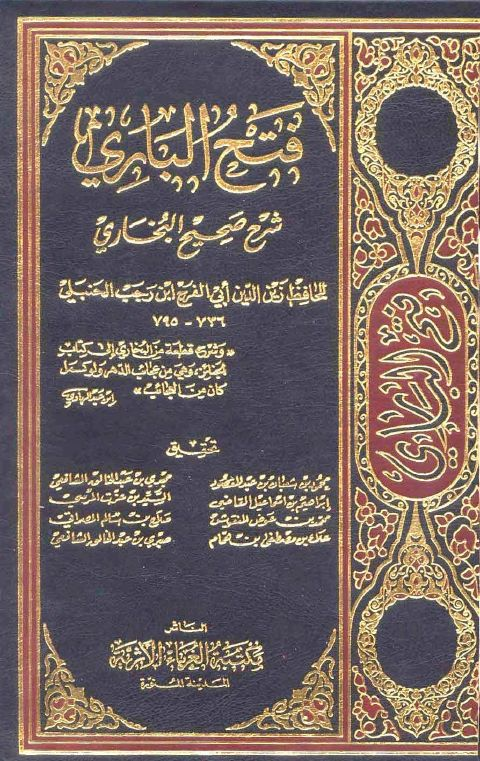
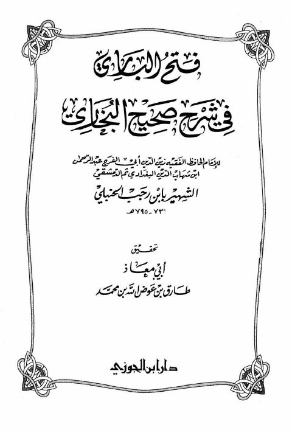
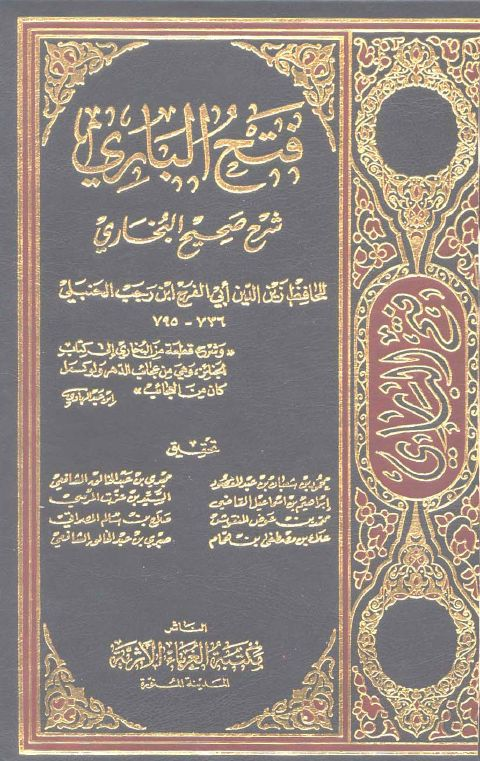

فتح الباري لابن رجب
ابن رجب الحنبلي
(d. 795 AH)
Publisher: مكتبة الغرباء الأثرية - المدينة النبوية.
Details
- الكتاب
- فتح الباري شرح صحيح البخاري
- المؤلف
- زين الدين عبد الرحمن بن أحمد بن رجب بن الحسن، السَلامي، البغدادي، ثم الدمشقي، الحنبلي (ت ٧٩٥ هـ)
- تحقيق
- محمود بن شعبان بن عبد المقصود، مجدي بن عبد الخالق الشافعي، إبراهيم بن إسماعيل القاضي، السيد عزت المرسي، محمد بن عوض المنقوش، صلاح بن سالم المصراتي، علاء بن مصطفى بن همام، صبري بن عبد الخالق الشافعي
- الناشر
- مكتبة الغرباء الأثرية - المدينة النبوية.
- الحقوق
- مكتب تحقيق دار الحرمين - القاهرة
- الطبعة
- الأولى، ١٤١٧ هـ - ١٩٩٦ م
- ترقيم الكتاب موافق للمطبوع
- صفحة المؤلف
- ابن رجب الحنبلي
About the author
Arabic original
ابن رجب الحنبلي (٧٣٦ - ٧٩٥ هـ، ١٣٣٦ - ١٣٩٣ م).
زين الدين عبد الرحمن بن أحمد بن رجب بن الحسن، السَلامي، البغدادي، ثم الدمشقي، الحنبلي، الواعظ. الإمام الحافظ، المحدّث، الفقيه، ولد في بغداد وسمع من أبي الفتح الميدومي.
له مصنفات عديدة، منها:
• شرح الترمذي
• شرح علل الترمذي
• طبقات الحنابلة
• فتح الباري شرح صحيح البخاري لم يتمه
• جامع العلوم والحكم شرح خمسين حديثًا من جوامع الكلم؛
• التوحيد
وغيرها.
نشأ وتوفي بدمشق.
نقلا عن
الموسوعة العربية العالمية http://www.mawsoah.net
- أحكام الاختلاف في رؤية هلال ذي الحجة
- أحكام الخواتيم
- أسباب المغفرة
- أهوال القبور وأحوال أهلها إلى النشور
- اختيار الأولى في شرح حديث اختصام الملأ الأعلى - ت الدوسري
- اختيار الأولى في شرح حديث اختصام الملأ الأعلى - ضمن مجموع رسائل ابن رجب
- استنشاق نسيم الأنس من نفحات رياض القدس
- الاستخراج لأحكام الخراج
- البشارة العظمى للمؤمن بأن حظه من النار الحمى
- التخويف من النار والتعريف بحال دار البوار
- التخويف من النار والتعريف بحال دار البوار
- الحكم الجديرة بالإذاعة - ت الأرنؤوط
- الحكم الجديرة بالإذاعة - ضمن مجموع رسائل ابن رجب
- الذل والانكسار للعزيز الجبار
- الرد على من اتبع غير المذاهب الأربعة
- الفرق بين النصيحة والتعيير
- الفرق بين النصيحة والتعيير
- القاعدة الذهبية لا ضرر ولا ضرار
- القول الصواب في تزويج أمهات أولاد الغياب
- الكلام على قوله تعالى {إنما يخشى الله من عباده العلماء}
- المحجة في سير الدلجة
- بيان فضل علم السلف على علم الخلف
- تسلية نفوس النساء والرجال عند فقد الأطفال
- تسلية نفوس النساء والرجال عند فقد الأطفال
- تفسير ابن رجب الحنبلي
- تفسير سورة الإخلاص
- تفسير سورة الفاتحة لابن رجب
- تفسير سورة النصر
- جامع العلوم والحكم - ت أبي النور
- جامع العلوم والحكم - ت الأرنؤوط
- جامع العلوم والحكم - ت الفحل
- جزء فيه الكلام على حديث يتبع الميت ثلاث
- جزء من الكلام على حديث شداد بن أوس «إذا كنز الناس الذهب والفضة»
- ذم الخمر
- ذم قسوة القلب
- ذيل طبقات الحنابلة - لابن رجب - ت العثيمين
- ذيل طبقات الحنابلة - لابن رجب - ت الفقي
- رسالة في رؤية هلال ذي الحجة
- سيرة عبد الملك بن عمر بن عبد العزيز
- شرح حديث «إن أغبط أوليائي»
- شرح حديث «لبيك اللهم لبيك»
- شرح حديث «ما ذئبان جائعان»
- شرح حديث «مثل الإسلام»
- شرح حديث عمار بن ياسر - رضي الله عنه -
- شرح حديث لبيك اللهم لبيك
- شرح علل الترمذي
- صدقة السر وفضلها
- غاية النفع في شرح حديث «تمثيل المؤمن بخامة الزرع»
- فتح الباري لابن رجب
- فضائل الشام
- فضل علم السلف على علم الخلف
- قاعدة في إخراج الزكاة على الفور
- قواعد ابن رجب - ت مشهور
- قواعد ابن رجب - ط الخانجي
- قواعد ابن رجب - ط ركائز
- كشف الكربة في وصف أهل الغربة
- كشف الكربة في وصف حال أهل الغربة
- كلمة الإخلاص وتحقيق معناها - ضمن رسائل ابن رجب
- كلمة الإخلاص وتحقيق معناها - ط المكتب الإسلامي
- لطائف المعارف فيما لمواسم العام من الوظائف - ت السواس
- لطائف المعارف فيما لمواسم العام من الوظائف - ت عامر
- لطائف المعارف فيما لمواسم العام من الوظائف - ت عوض الله
- لطائف المعارف فيما لمواسم العام من الوظائف - ط ابن حزم
- مجموع رسائل ابن رجب
- مختصر في معاملة الظالم السارق
- مقدمة تشتمل على أن جميع الرسل كان دينهم الإسلام
- نزهة الأسماع في مسألة السماع «أحكام الغناء والمعازف»
- نور الاقتباس في مشكاة وصية النبي - صلى الله عليه وسلم - لابن عباس
- ورثة الأنبياء شرح حديث أبي الدرداء
Shares most with
- المسند الموضوعي الجامع للكتب العشرة 1,917
- المسند المصنف المعلل 1,695
- المسند الجامع 1,525
- فضل الرحيم الودود تخريج سنن أبي داود 1,443
- جامع الأصول 1,403
- الجامع الكامل في الحديث الصحيح الشامل المرتب على أبواب الفقه 1,392
- البحر المحيط الثجاج في شرح صحيح الإمام مسلم بن الحجاج 1,374
- مسند أحمد - ط الرسالة 1,339
- عمدة القاري شرح صحيح البخاري 1,320
- فتح الباري بشرح البخاري - ط السلفية 1,264
- السنن الكبرى - البيهقي - ط العلمية 1,259
- التوضيح لشرح الجامع الصحيح 1,251
Also in the catalogue

فتح الباري شرح صحيح البخاري -ط الغرباء- أجزاء فتح الباري شرح صحيح البخاري -ط الغرباء- أجزاء عبد الرحمن البغدادي بن رجب الحنبلي
فتح الباري في شرح صحيح البخاري- ط. دار ابن الجوزي فتح الباري في شرح صحيح البخاري- ط. دار ابن الجوزي عبد الرحمن البغدادي بن رجب الحنبلي
فتح الباري شرح صحيح البخاري -ط الغرباء- مدمجة فتح الباري شرح صحيح البخاري -ط الغرباء- مدمجة عبد الرحمن البغدادي بن رجب الحنبلي فتح الباري شرح صحيح البخاري -ط الغرباء- مدمجة
فتح الباري شرح صحيح البخاري -ط الغرباء- مدمجة
عبد الرحمن البغدادي بن رجب الحنبلي
فتح الباري شرح صحيح البخاري -ط الغرباء- مدمجة
فتح الباري شرح صحيح البخاري -ط الغرباء- مدمجة
عبد الرحمن البغدادي بن رجب الحنبلي
Contents